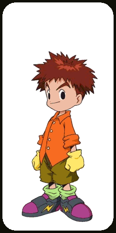
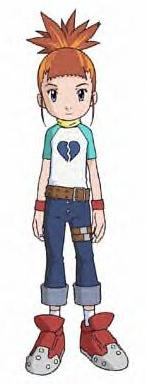

| Tai is the leader of the digidestined. Without him the team seems to fall apart. His crest is courage. Agumon is his digimon partner. His digimon was the first to digivolve in Rookie, Champion, Ultimate, and Mega. |
| Sora helps keep the team together. She is the sensible on in the group. She is the most mature. Sora's crest is love. Her digimon partner is Biyomon. |
| Matt is a bit of a loner. He is supposed to be the cool one in the group. He and Tai have had their share of fights, but when they work together they make a nearly unstoppable team. Matt's crest is friendship. His digimon partner is Gabumon. |
|  | Izzy is a computer genius. He knows the most about the digital world. His brains have gotten the digidestined out of trouble manny times. Izzy's crest is knowledge. His digimon partner is Tentomon. |
| Joe is pretty cowardly, but very responsible. He is somewhat a perfectionist. He watches out for everyone and when someone is is need he's there to help. |
| Mimi is the popular girl. She enjoys shopping and hanging out at the mall. Surviving in the digital world was especially tough for her, but she came through in the end. Her crest is sincerety. Her digimon partner is Palmon. |
| At the beginning of Season 1, everyone is always looking out for T.K. T.K. is Matt's little brother. He proves to be a valuable member of the team when his digimon beats Devimon. His crest is hope. His digimon partner is Patamon. |
| Kari doesn't show up until Season 1 is nearly over. She does play a key role in the show however. She is Tai's little sister. Kari always wants to help others. Her crest is light. Her digimon partner is Gatomon. |
Season 2
| The new leader of the Digidestined and as every leader must have, he has goggles. He has the digi-eggs of Courage, Friendship and Miracles. His digimon is Veemon. Davis is not very bright, not to mention hot-headed and often is irrational, but in times of need, he is a true leader with rock-solid determination. He also is in love with Kari, but is never able to get her. |
| Yolei has her moods. She has the digi-eggs of Love and Sincerity. Her digimon is Hawkmon. SOmetimes she's loving and sincere, other times she's grouchy and foolish, but overall she is strong. Her strength is the strongest of all the Digidestined, sometimes to a fault. |
| Cody is a shy little kid. He controls the digi-eggs of Reliability and Knowledge. His digimon is Armadillomon. He's the most sensitive of all the digidestined, but his strongest characteristic is honesty. He is reliable, and wise, but not quite like Izzy who is smart. |
| He was once the evil Digimon emperor, now he is a kind Digidestined. He controls no digi-eggs and his digimon is Wormmon. He's paid for his mistakes and his goal now is to stop evil. With his best friend Wormmon, he'll fight against the Darkness, outside and within. |
| He's grown up a lot. He controls the digi-egg of Hope and his digimon is still Patamon. He's more mature, not a cry baby, and has quite a vendetta against evil. On the other hand, him and Davis get along about as much as Matt and Tai first did. |
| She's not so little anymore, but her light still burns bright. She has the digi-egg of Light and she still has Gatomon. She fears the darkness that has overwhelmed he before, bringing her to the Dark Ocean twice. But her heart is pure gold. |
Season 3
| Takato is the kind-hearted leader of the new Digidestined, or Tamers. With his digimon Guilmon he is ready to take on any obstacle. |
| Henry is quite sensible and tries to avoid battles if he can. His digimon is Terriermon. He's a very sensetive guy and always wants to look out for his sister, Suzie. But when he is needed he and Terriermon will get the job done. |
|  | Talk about moody. Rika's digimon is Renamon. Rika has had many stages from thinking that Digimon only serve to battle, to confusion, to hating Digimon. She's finally come to her senses now and a stubborn, serious Tamer. |
| She's very sensetive, kind, and friendly. The tamer of Leomon. The anti-Rika. She'll help her friends whenever they are in need and then she'll play with her puppet or Leomon |
| He's sensetive, but doesn't really show it. He was the last Tamer to get a Digimon, but he's quite happy with his Mega, MarineAngemon. |
| Kazu is not the brightest Digidestined. He's a very aggresive Tamer and doesn't concentrate much on Defence. But him and his digimon Guardromon are a good team. |
| She's Henry's little sister and doesn't know much about Digimon. She cares more about playing and when Terriermon was gone, she got her own Digimon, Lopmon and she loves her. |
| Boy does he have a story. He's a friendly Digidestined and always watches out for someone in need, but he has trouble controling Cyberdramon. He originally saved Ken from Milleniummon by turning him into MoonMilleniummon, but he shot out a dark spore and Ken saved him. Later he would DNA digivolve his Digimon with Milleniumon to get Cyberdramon. He is the missing link between seasons 2 and 3. |